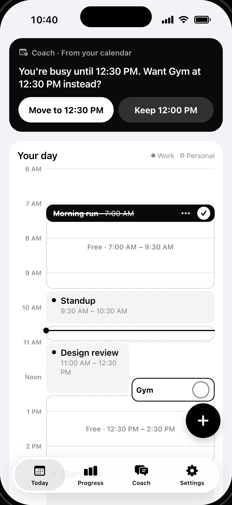

Your meeting ran late.
Does your workout disappear?
I’m building Habitnex to help habits fit around your calendar.
Talk to the coach,
review the suggested change,
then apply it when it works for you.
habitnex
Join the waitlist
habitnex.io
Demo · In developmentIllustrative calendar · Demo